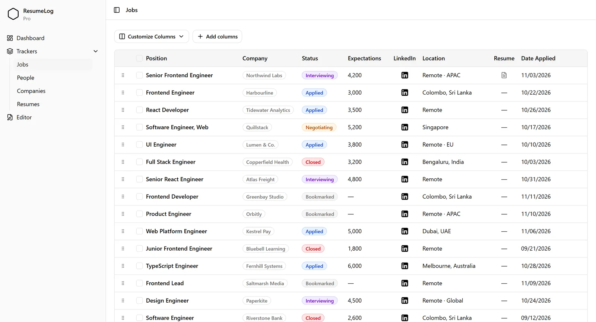
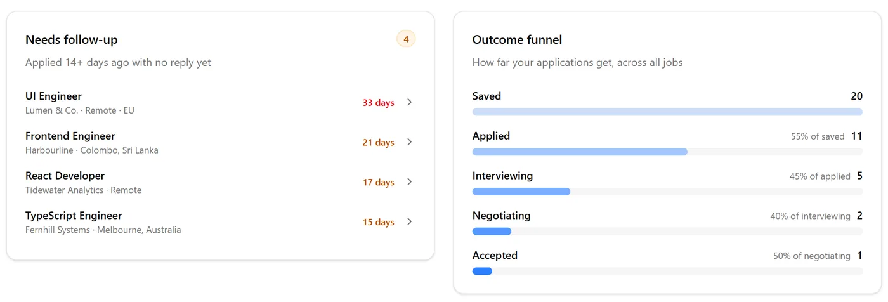

Every job you apply to, remembered.

The side panel spots the posting while you browse. Press Save and it’s in your log.


Status, salary, the CV you sent and the original posting, on one row.

An ATS check against the posting: a score in six parts, missing keywords and specific fixes.


See which applications have gone quiet, and where your search stalls.
